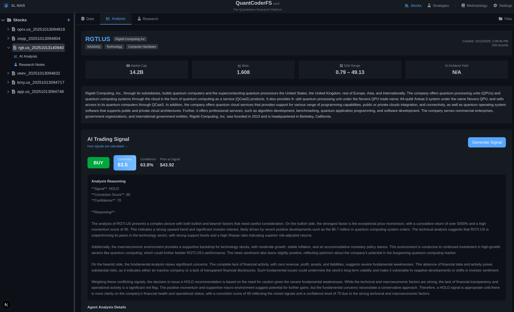
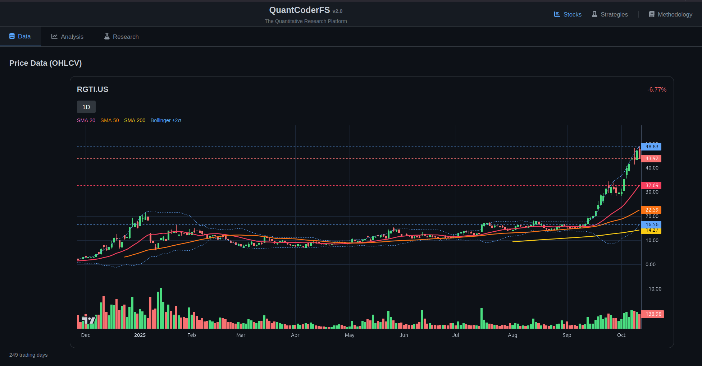

QuantCoderFS v2.0
Unified quantitative research and algorithm development platform
QuantCoderFS v2.0 is a unified quantitative research platform for equity analysis and algorithm development. Multi-agent equity research inspired by MarketSense AI paper (Fatouros et al., 2024), automated strategy generation from academic papers using CrewAI workflows, and direct deployment to QuantConnect for backtesting and live trading.
Market Intelligence Features:
- Stock data aggregation (EOD prices, fundamentals, news)
- Multi-agent signal generation (inspired by MarketSense AI research)
- Multi-agent analysis: Fundamentals, News, Price Dynamics, Macro
- TradingView charts with technical indicators
- Research notes and trading journal
Strategy Generation Features:
- Academic paper extraction and summarization
- Automated QuantConnect algorithm code generation
- CrewAI multi-agent workflow for strategy development
- Monaco code editor with syntax highlighting
- QuantConnect integration (push, compile, backtest)
- Trading notes generation
Screenshots:

Multi-agent AI trading signals with detailed analysis

Interactive charts with technical indicators
Technology Stack:
TypeScript
Python
FastAPI
Next.js 15
CrewAI
MarketSense AI
QuantConnect
SQLite/PostgreSQL